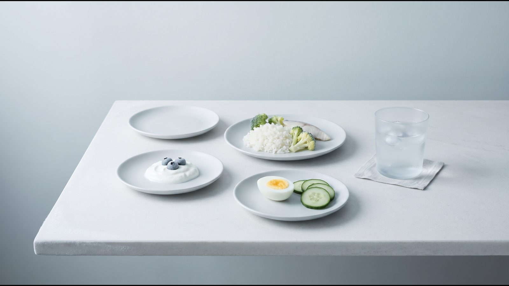
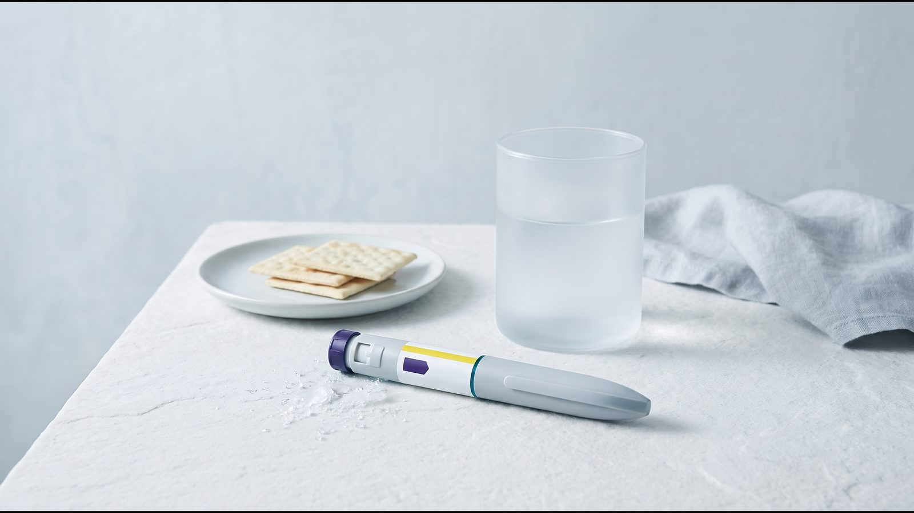
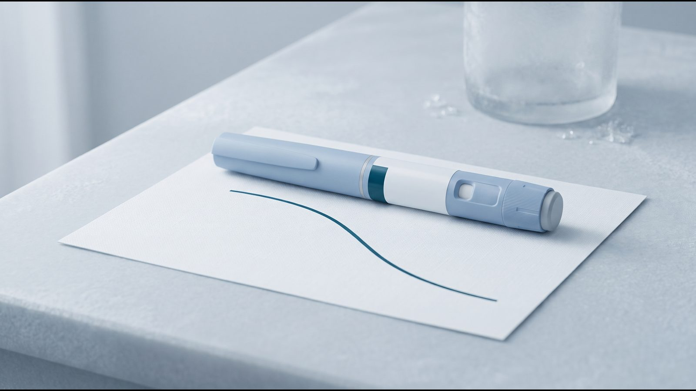

Побічні ефекти Ozempic®: які реакції часті і коли потрібна допомога лікаря

Побічні ефекти Ozempic® (Оземпік, семаглутид) найчастіше стосуються травлення: нудота і діарея за українською інструкцією трапляються дуже часто, тобто щонайменше в 1 людини з 10. Тут зібрано реакції з інструкції з їхньою частотою, відмінності європейської інструкції та симптоми, за яких не варто чекати наступної ін'єкції. Рішення про дозу, паузу чи відміну препарату за будь-якої реакції ухвалює лікар.
Коротко: чого чекати від Ozempic®
Найпоширеніші реакції на Ozempic® (нудота, діарея, блювання) за українською інструкцією реєструвалися переважно в перші місяці лікування, а нудота і діарея, за європейським листком-вкладишем, зазвичай минають з часом. Серйозні реакції, як-от гострий панкреатит (запалення підшлункової залози), трапляються нечасто, але потребують негайної допомоги лікаря. Ризик гіпоглікемії, тобто надто низького рівня глюкози в крові, зростає, коли Ozempic® поєднують з інсуліном або сульфонілсечовиною (таблетками від діабету, які посилюють виділення інсуліну). NAION, ураження зорового нерва, європейська інструкція наводить як дуже рідкісну реакцію, а українська інструкція Ozempic® його не містить.
Побічні реакції за українською інструкцією
За частотою інструкція ділить реакції так: «дуже часто» означає щонайменше 1 випадок на 10 людей, «часто» від 1 на 100 до 1 на 10, «нечасто» від 1 на 1000 до 1 на 100, «рідко» від 1 на 10 000 до 1 на 1000; «невідомо»: частоту неможливо оцінити за наявними даними.
| Частота | Реакції за українською інструкцією Ozempic® |
|---|---|
| Дуже часто | нудота, діарея; гіпоглікемія при поєднанні з інсуліном або сульфонілсечовиною |
| Часто | блювання, біль у животі, здуття, запор, диспепсія (розлад травлення), гастрит, гастроезофагеальна рефлюксна хвороба (рефлюкс, печія), відрижка, метеоризм; холелітіаз (камені в жовчному міхурі); запаморочення; втома; зменшення апетиту; ускладнення діабетичної ретинопатії (ураження очей при діабеті); гіпоглікемія з іншими пероральними цукрознижувальними засобами; підвищення ліпази й амілази (ферментів підшлункової залози); зниження маси тіла |
| Нечасто | гострий панкреатит; сповільнена евакуація шлункового вмісту; гіперчутливість (алергічні реакції); дисгевзія (зміна смаку); підвищена частота серцевих скорочень; реакції в місці введення |
| Рідко | анафілактична реакція (тяжка алергічна реакція) |
| Невідомо | кишкова непрохідність; ангіоневротичний набряк (швидкий набряк обличчя, губ, язика чи горла) |
Зниження маси тіла українська інструкція Ozempic® наводить серед частих побічних реакцій, а не серед показань; чим Ozempic® відрізняється від Вегові®, пояснює стаття про семаглутид.
За даними досліджень, наведеними в інструкції, нудоту мали 17,0 % пацієнтів на дозі 0,5 мг і 19,9 % на дозі 1 мг, діарею 12,2 % і 13,3 %, блювання 6,4 % і 8,4 %. Через ці реакції лікування припинили 3,9 % і 5 % пацієнтів, а через будь-які побічні реакції 6,1 % і 8,7 % проти 1,5 % на плацебо.
Чим відрізняється європейська інструкція: NAION та інші реакції
Європейська інструкція Ozempic® (SmPC, EMA) містить три реакції, яких немає в українській редакції від 15.07.2026: головний біль (часто), дизестезію, тобто зміну шкірної чутливості (частота невідома), і NAION (дуже рідко). NAION (неартеріїтна передня ішемічна оптична нейропатія) є ураженням зорового нерва, яке, за європейським листком-вкладишем, може спричинити безболісну втрату зору на одне око.
У червні 2025 року комітет EMA з фармаконагляду (PRAC) дійшов висновку, що NAION є дуже рідкісною побічною реакцією (до 1 випадку на 10 000 людей) препаратів семаглутиду: Ozempic®, Rybelsus® і Wegovy®. За європейською інструкцією, результати кількох великих епідеміологічних досліджень свідчать, що в дорослих із цукровим діабетом 2 типу застосування семаглутиду пов'язане з приблизно дворазовим підвищенням відносного ризику NAION; це відповідає приблизно 1 додатковому випадку на 10 000 людино-років лікування.
В Україні NAION з частотою «дуже рідко» внесено до інструкції Вегові® ФлексТач®, але в інструкції Ozempic® (редакція від 15.07.2026) його немає. Причину розбіжності документи не пояснюють.
Тривожні симптоми: коли потрібна допомога одразу
Джерела таблиці: українська, європейська та американська (FDA) інструкції.
| Симптом | Що це може бути | Що робити |
|---|---|---|
| Сильний біль у животі, що не минає і може віддавати в спину | гострий панкреатит (нечасто) | негайно звернутися до лікаря; за підозри на панкреатит семаглутид відміняють |
| Утруднене дихання, набряк обличчя, губ, язика чи горла з утрудненим ковтанням, прискорене серцебиття | тяжка алергічна реакція (рідко) | негайно звернутися по медичну допомогу і повідомити лікаря |
| Раптова втрата зору або зір, що швидко погіршується | NAION (дуже рідко за EMA) | негайно зв'язатися з лікарем; може знадобитися огляд офтальмолога |
| Біль у верхній частині живота, жовтушність шкіри чи очей, гарячка, світлий глинистий кал | проблеми з жовчним міхуром | одразу повідомити лікаря |
| Тяжкий запор зі здуттям, болем у животі, блюванням | кишкова непрохідність (частота невідома) | без зволікань звернутися до лікаря |
| Нудота, блювання або діарея, що не минають | зневоднення з ризиком для нирок | пити достатньо рідини й одразу повідомити лікаря |
| Холодний піт, бліда холодна шкіра, тремтіння, сильний голод, сплутаність, прискорене серцебиття | гіпоглікемія, особливо з інсуліном чи сульфонілсечовиною | діяти за планом, який дав лікар, і повідомити йому |
Якщо панкреатит підтверджено, лікування семаглутидом за українською інструкцією не поновлюють.
Гіпоглікемія, нирки й очі: кому варто бути уважнішими
Семаглутид стимулює вироблення інсуліну лише за підвищеної глюкози, і при монотерапії епізодів тяжкої гіпоглікемії в дослідженнях не спостерігали. У поєднанні із сульфонілсечовиною чи інсуліном ризик вищий: тяжку гіпоглікемію мали 1,2 % і 1,5 % пацієнтів відповідно. З ознаками гіпоглікемії не можна сідати за кермо. Про поєднання з іншими ліками розповідає стаття про взаємодії GLP-1.
Нудота, блювання і діарея можуть спричинити зневоднення, яке здатне погіршити функцію нирок. За європейською інструкцією таке трапляється рідко; вона радить пити достатньо рідини, особливо при хворобах нирок.
У людей з діабетичною ретинопатією, які отримують інсулін і семаглутид, ризик її ускладнень підвищувався: у дворічному дослідженні серцево-судинної безпеки (3297 пацієнтів з цукровим діабетом 2 типу) вони виникли в 3,0 % на семаглутиді проти 1,8 % на плацебо. Інструкція пов'язує це зі швидким покращенням контролю глюкози, хоча інших механізмів не виключає.
Що допомагає при нудоті та інших реакціях травлення
Спільна рекомендація американських фахових товариств ACLM, ASN, OMA і TOS (2025) радить на терапії GLP-1 їсти невеликими порціями кожні 3–4 години, пити достатньо рідини і в перші дні лікування обмежити жирну їжу та продукти з великою кількістю клітковини. Докладні поради і приклад меню є в статті про харчування на GLP-1. Якщо реакції не минають або заважають їсти й пити, рішення про дозу ухвалює лікар, а не сам пацієнт.

Перед зверненням до лікаря корисно підготувати відповіді на кілька запитань:
- Коли почалися симптоми і чи збіглися вони з підвищенням дози.
- Скільки разів за добу було блювання чи діарея.
- Чи вдається пити й утримувати рідину.
- Чи є біль у животі, гарячка, жовтушність шкіри чи очей.
- Які ще ліки ви приймаєте, зокрема інсулін чи сульфонілсечовину.
- Що і скільки ви їли, за щоденником харчування або фото їжі.
[КОММЕНТАРИЙ ВРАЧА: коли при нудоті чи діареї на Ozempic® лікарі клініки просять писати одразу, а коли достатньо змінити харчування; 2–3 речення]
Техніку ін'єкції і правила для пропущеної дози пояснює стаття як колоти Ozempic®.
Часті запитання
Чи впливає Ozempic® на щитоподібну залозу?
Українська інструкція згадує C-клітинні пухлини щитоподібної залози лише в дослідженнях на щурах і мишах і вважає їхню значущість для людей низькою, але не виключеною. За американською інструкцією (FDA) Ozempic® протипоказаний при медулярному раку щитоподібної залози в людини чи її родичів і синдромі MEN 2 (множинна ендокринна неоплазія 2 типу), а про ущільнення на шиї, захриплість, утруднене ковтання або задишку радить повідомляти лікаря.
Чи частішає пульс на Ozempic®?
За українською інструкцією підвищена частота серцевих скорочень є нечастою реакцією. У дослідженнях пульс у середньому зростав на 1–6 ударів на хвилину від початкових 72–76. Помітне або стійке прискорення серцебиття варто обговорити з лікарем.
Чи можна застосовувати Ozempic® під час вагітності або годування груддю?
Ні, за українською інструкцією семаглутид не застосовують ні під час вагітності, ні під час годування груддю. Жінкам репродуктивного віку на лікуванні рекомендовано контрацепцію, а при плануванні вагітності препарат відміняють щонайменше за 2 місяці. Як змінити лікування, вирішує лікар.
Куди повідомити про побічну реакцію?
Насамперед про реакцію варто сказати лікарю, який веде лікування. Повідомити можна й самостійно, через онлайн-систему Державного експертного центру МОЗ України aisf.dec.gov.ua (адреса з листа «Ново Нордіск Україна» для пацієнтів, 2026).
Що далі
Під час лікування в клініці спеціаліст на зв'язку 24/7, а лікар регулярно відстежує вагу й самопочуття і за потреби коригує курс. Як відрізняються реакції на тирзепатид, пояснює стаття про побічні ефекти Mounjaro®, а про формат терапії розповідає сторінка Ozempic®.
Джерела
- Інструкція для медичного застосування лікарського засобу ОЗЕМПІК® (шприц-ручка 1 мг), РП UA/19176/01/01. МОЗ України, дата останнього перегляду 15.07.2026. http://www.drlz.com.ua/ibp/lz_www.nsf/id/4513FF4967F3CA9142258E3C0033EB31/$file/UA191760101_BA8B.pdf
- Інструкції для медичного застосування ОЗЕМПІК® 0,25 мг/0,5 мг і 1 мг. МОЗ України, Державний реєстр лікарських засобів (запис за наказом МОЗ № 885 від 29.06.2026). http://www.drlz.com.ua/ibp/lz_www.nsf/id/2D837A4C00C398AB42258E2C00345419/$file/UA191760101_304C.mht
- Інструкція для медичного застосування ВЕГОВІ® ФЛЕКСТАЧ®. МОЗ України, дата останнього перегляду 29.05.2026. http://www.drlz.com.ua/ibp/lz_www.nsf/id/66B4FF005B1E4F1C42258E9C0033DAB8/$file/UA206170104_0A41.pdf
- Ozempic: EPAR Product Information (SmPC, Package leaflet). European Medicines Agency, 2026. https://www.ema.europa.eu/en/documents/product-information/ozempic-epar-product-information_en.pdf
- Meeting highlights from the Pharmacovigilance Risk Assessment Committee (PRAC) 2–5 June 2025. European Medicines Agency, 2025. https://www.ema.europa.eu/en/news/meeting-highlights-pharmacovigilance-risk-assessment-committee-prac-2-5-june-2025
- OZEMPIC (semaglutide) injection: Prescribing Information, Medication Guide. Novo Nordisk, FDA / DailyMed, June 2026. https://dailymed.nlm.nih.gov/dailymed/drugInfo.cfm?setid=adec4fd2-6858-4c99-91d4-531f5f2a2d79
- Mozaffarian D et al. Nutritional priorities to support GLP-1 therapy for obesity: a joint Advisory from ACLM, ASN, OMA and TOS. Am J Clin Nutr, 2025. https://pmc.ncbi.nlm.nih.gov/articles/PMC12612741/
- Інформаційний лист-звернення до пацієнтів з цукровим діабетом 2 типу щодо лікарського засобу Оземпік®. ТОВ «Ново Нордіск Україна», 2026. https://www.dls.gov.ua/wp-content/uploads/2026/06/Додаток-2-_АТ-НовоНордіск_Оземпік_Інформаційний-лист-для-пацієнтів_09.06.2026.pdf
Матеріал має інформаційний характер і не замінює консультацію лікаря. Препарати призначає лікар після консультації.
Читайте також

